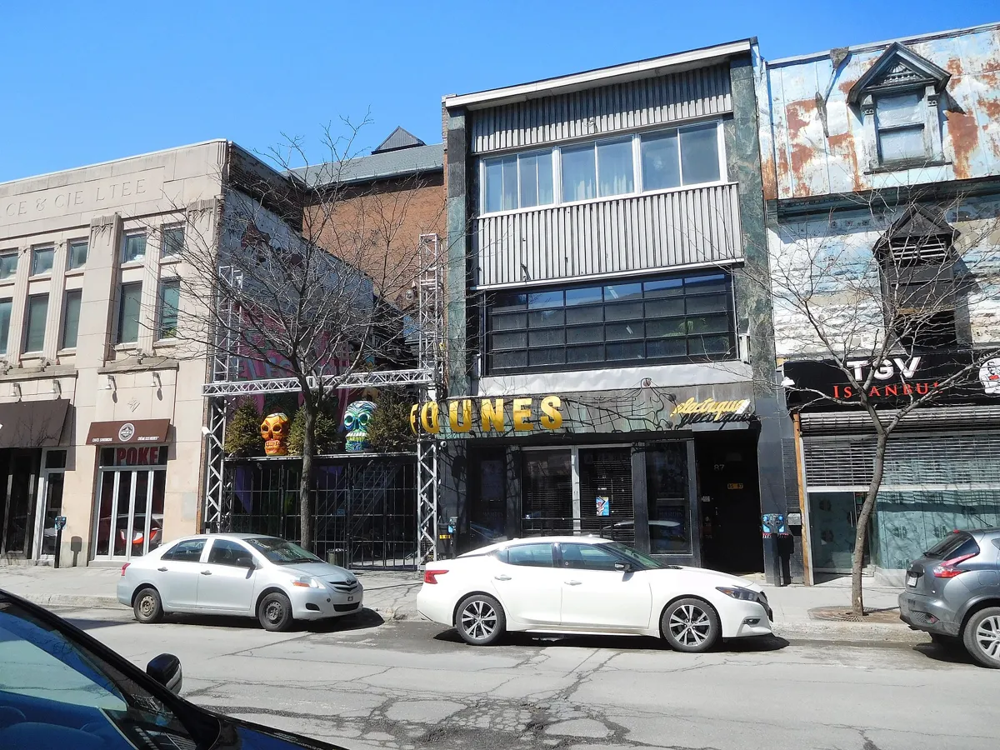
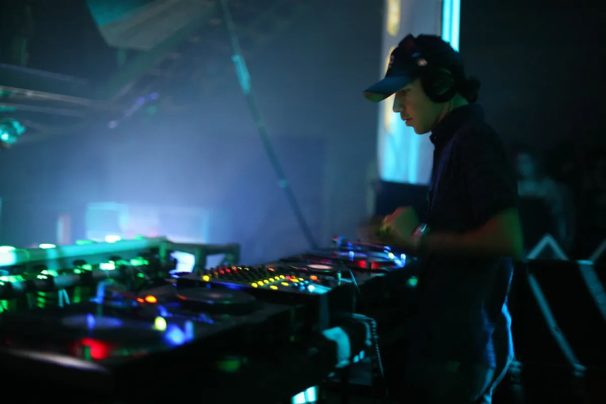
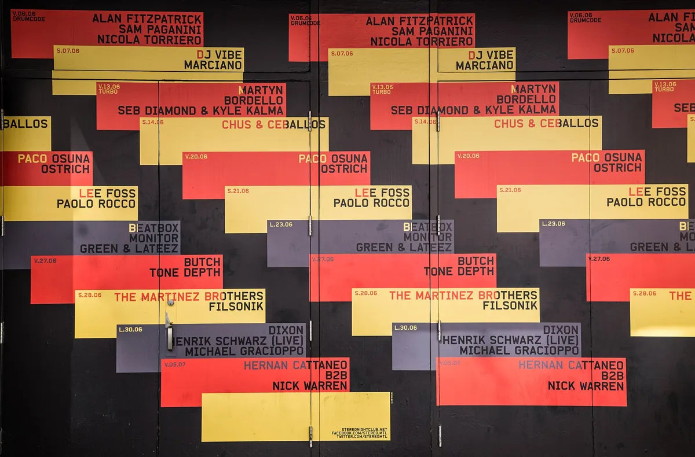
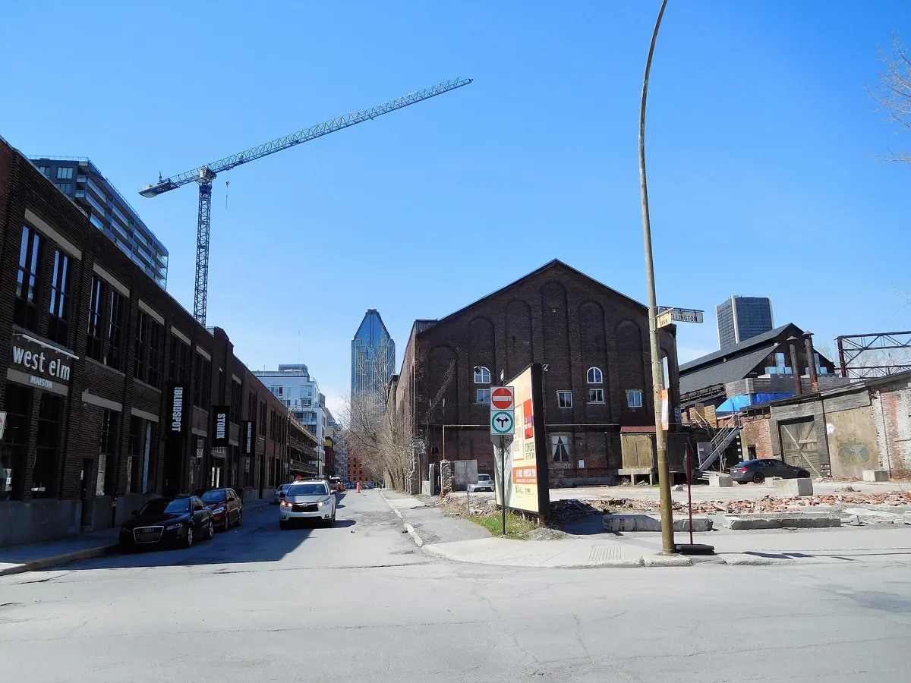
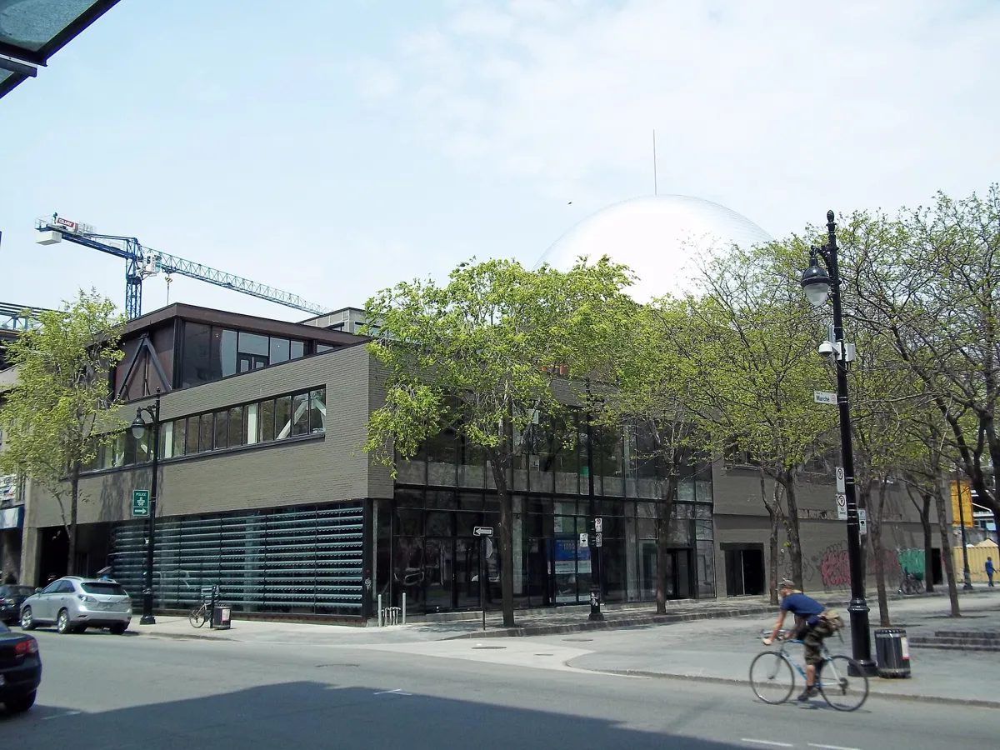
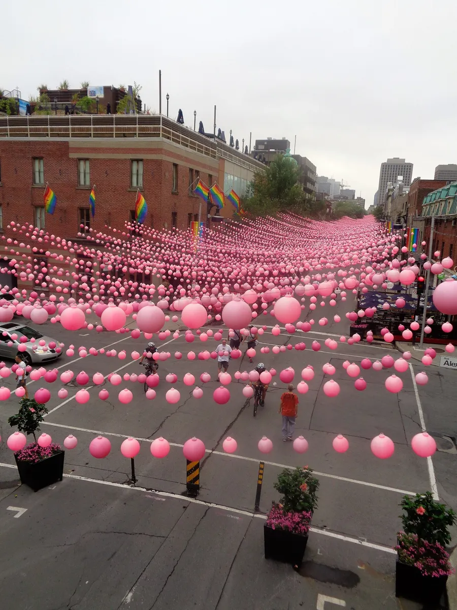
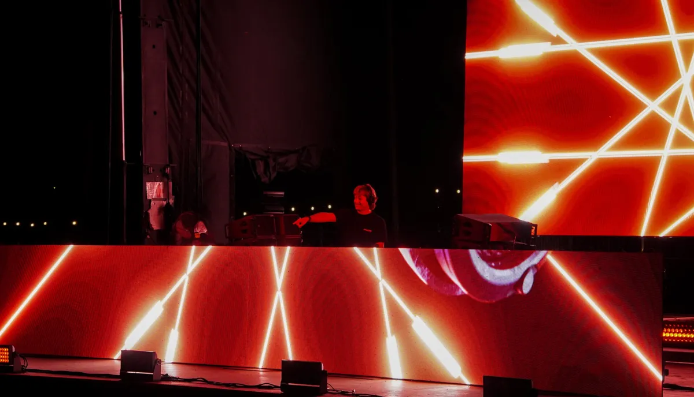
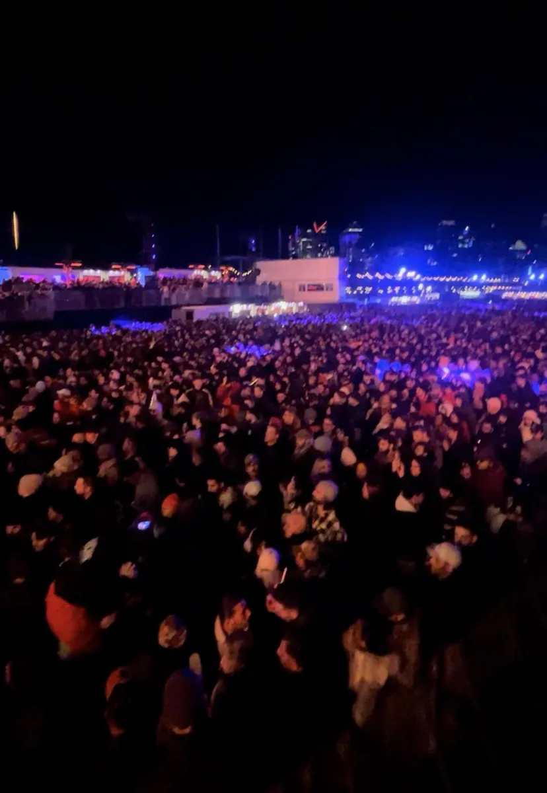
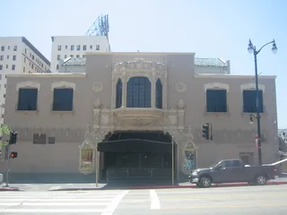
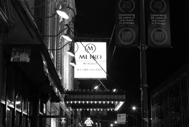

Montreal clubs
The best clubs in Montreal, from the Limelight to Stereo
Montreal has been a party town since Prohibition, and its most famous club opens at 2am. In summer and winter the dance floor moves outdoors.
Plan your visit
Where to go out in Montreal.
Montreal nightlife spreads across a few neighbourhoods. The Village, on Sainte-Catherine Street East, has Stereo, Newspeak, Club Unity, Cabaret Berlin and Complexe Sky. Saint-Laurent Boulevard has Salon Daomé and Club DD's, and Mile End has Bar Datcha. Old Montreal has Velvet Speakeasy and the La Voûte supper club in an old Royal Bank vault. Griffintown has New City Gas.
For other dancing, Tourisme Montréal names the Salsathèque downtown, one of the oldest Latin clubs in the city, and Balattou on the Plateau, a world-beat club and the home of Nuits d'Afrique for more than 35 years.
A party town since the 1920s.
Montreal has been a party town for a century. In the 1920s Prohibition in the United States made it the place to go out, and Time Out's list of the best clubs in Montreal opens with that history, along with the claim that North America's first discothèques opened in the city.
The scene that followed runs from a 1970s disco on Stanley Street to an after-hours club that opens at 2am and, as Time Out puts it, gets going around 5am. The Montreal clubs open now are spread between the Village, the Plateau, Mile End, Old Montreal and Griffintown, and two of the biggest dance floors in the city are outdoor festivals.
Cabarets and Prohibition.
Montreal's cabaret history starts with Prohibition. Driven by it, the city's cabarets booked artists from the United States and France, and Montreal quickly became known as a party town, drawing large numbers of American tourists.
In 1930 Texas Guinan, New York's leading cabaret star, arrived to open the Cabaret Frolics and caused a sensation on the Main, as Saint-Laurent Boulevard is known. Television and a campaign of repression led by Mayor Jean Drapeau in the late 1950s wore the cabarets down, and by the early 1970s they had disappeared.
Limelight and Montreal disco.
The Limelight opened on 7 September 1973 at 1254 Stanley Street. It was founded by Yvon Lafrance and named after the Charlie Chaplin film. Robert Ouimet was its resident DJ from 1973 to 1981, and, according to Tourisme Montréal, Rolling Stone named him the best DJ in North America in 1976 and Billboard made him DJ of the year in 1977.
The crowd was mixed, and the guests included Grace Jones, James Brown, David Bowie, Gloria Gaynor and Iggy Pop.
Les Foufounes Électriques and the 1990s.
Les Foufounes Électriques opened in 1983 at 87 Sainte-Catherine Street East, in the Quartier Latin. Norman Boileau, François Gourd and Bernard Paquet started it as a punk and goth room, and the name translates as "the electric buttocks". Tourisme Montréal still lists the Foufs, as everyone calls it, for its two stages.

Tiga, born in 1974, was throwing parties in Montreal from 1990. In 1994 he bought DNA Records, and in 1996 he helped open SONA, a club.

His 2001 single "Sunglasses at Night" reached No. 23 in the UK, and his album Sexor later won a Juno Award.
Stereo.
Stereo was founded in 1998 by Angel Moraes, a DJ and producer from Brooklyn whose "Heaven Knows" had reached No. 25 on Billboard's dance chart in 1995. His live album Back From Stereo came out in 2000. Moraes died in February 2021. The club's owner is Tommy Piscardelli.

Stereo is an after-hours club for house and techno, known for its sound system. It has two floors: the after-hours room upstairs and Stereobar downstairs, which keeps legal hours. Tourisme Montréal calls it an internationally acclaimed after-hours club with marathon DJ sessions, and notes that it does not serve alcohol. The club also has a zero-tolerance policy on GHB.
The club has been through two arson attacks. It closed in 2008, and the second fire delayed its reopening, which came on 4 September 2009. In 2023 6AM put Stereo Montreal at No. 28 of the 40 best house and techno clubs in North America, between Coda in Toronto and Montreal's Beachclub, and called it "pure dance floor ecstasy".
The best clubs in Montreal now.
Time Out ranked 21 Montreal clubs in October 2024, and Cult MTL readers voted on the best nightclub in November 2026. The table keeps to the Montreal nightclubs where the dance floor is the point.
| Club | Area | Music and character | Best for |
|---|---|---|---|
| StereoGoogle MapsResident Advisor | Village | After hours from 2am, no alcohol, founded 1998 | House and techno until morning |
| NewspeakGoogle MapsResident Advisor | Village | First on Time Out’s 2024 list | Techno, minimal and deep house |
| Salon DaoméGoogle MapsResident Advisor | Saint-Laurent | Open Tuesday to Sunday | House and techno |
| Bar DatchaGoogle MapsResident Advisor | Mile End | Local DJs and Multi Culti nights | Underground electronic music |
| StereobarGoogle MapsResident Advisor | Village | Under Stereo, until 3am | The night before Stereo |
| Club UnityGoogle MapsResident Advisor | Village | Two floors and a rooftop | Techno and house in the small room |
| New City GasGoogle MapsResident Advisor | Griffintown | An 1859 gas plant, 40,000 square feet | EDM headliners |
| Cabaret BerlinGoogle MapsResident Advisor | Village | Minimal techno, queer goth, Italo disco | Alternative nights |
| SystèmeGoogle MapsResident Advisor | Plaza St-Hubert | Third in Cult MTL’s 2026 readers’ poll | Dancing |
| Velvet SpeakeasyGoogle MapsResident Advisor | Old Montreal | A speakeasy that hosts Igloofest afterparties | House and techno |
Newspeak Montreal sits at the top of Time Out's list. It is on the second floor of the I Love Neon building in the Village, named after the language in Orwell's 1984, and plays techno, minimal and deep house, which makes it the nearest thing to a straight answer for the best dance club in Montreal.
Club Unity Montreal, in the Village, has two floors and a rooftop, with techno and house in its small room.
Salon Daomé moved from Mont-Royal Avenue to Saint-Laurent and is open Tuesday to Sunday for house and techno. Bar Datcha, in Mile End, is where Time Out points to DJs such as Thomas Von Party, RYAN Playground and Poirier and the Multi Culti nights. Stereobar, under Stereo, runs until 3am.

New City Gas is the big one. It opened in 2012 in Griffintown in an 1859 gaslight plant, has 40,000 square feet, and books EDM headliners such as Tiësto. Tourisme Montréal describes it as industrial-scale.
Cult MTL's 2026 readers put Club DD's on Saint-Laurent first, then Stereo, Système on Plaza St-Hubert, Sans Soleil on Saint-Urbain and Cabaret Berlin. Velvet Speakeasy, in Old Montreal, plays house and techno and hosts Igloofest afterparties.
Montreal techno and house music.
For Montreal techno, start at Newspeak and Stereo. For Montreal house music, Salon Daomé, Bar Datcha and Stereobar. Tourisme Montréal adds the Société des arts technologiques, the SAT, in the Quartier des Spectacles, under its domed roof.

The SAT is MUTEK's main venue. MUTEK was founded in 2000 by Alain Mongeau and runs for six days in late August. Since 2003 it has had an edition in Mexico City too.
The after hour clubs Montreal is known for come down to one name: Stereo, which opens at 2am and runs into the morning.
Gay Village and LGBTQ+ clubs.
The Gay Village runs along Sainte-Catherine Street East, between the Beaudry and Papineau metro stations. It is the largest gay village in North America by area, and Moise Tellier's shop, in 1869, is recorded as the first known gay establishment on the continent.

For a gay club in Montreal, Time Out names Le Belmont, home of the Mec Plus Ultra nights. Complexe Sky is also in the Village. Cabaret Berlin, on Sainte-Catherine East, mixes minimal techno, queer goth nights and Italo disco.
The biggest date in gay nightlife Montreal has is a festival. Bad Boy Club Montréal was founded in 1991 as an HIV/AIDS charity, and its Black & Blue party grew from 800 people at the first edition to between 60,000 and 75,000. It has given more than $1.4 million.
Montreal festivals: Piknic, Igloofest and MUTEK.
The two biggest dance floors in Montreal are outdoors. Piknic Électronik has run on Sundays in summer since 2003 at Parc Jean-Drapeau, from 2pm to 9:30pm, with a view of the Saint Lawrence.

It began with house and minimal techno, and has moved towards EDM. It drew 129,243 people in 2018, more than a million across its first 16 seasons, and minors are allowed in.
Igloofest is its winter counterpart, in the Old Port, co-produced by Piknic Électronik and the Quays of the Old Port. It started on 19 January 2007 and runs a contest for the best one-piece snowsuit.

Its bookings have included Josh Wink, Tiga, Carl Cox, Nina Kraviz and Kaytranada.
For the festivals in the rest of the country, see the Canadian EDM festivals guide, and for Igloofest alongside other cold-weather parties, the winter festivals guide.
Hear Montreal before you go.
Montreal clubs FAQ.
What are the best clubs in Montreal?
For house and techno, Stereo, Newspeak, Salon Daomé, Bar Datcha, Club Unity and Stereobar. New City Gas is the biggest room for EDM, and Le Belmont and Cabaret Berlin are the ones for LGBTQ+ nights.
What are the best nightclubs in Montreal for after hours?
Stereo, in the Village. It opens at 2am, gets going around 5am and does not serve alcohol. 6AM ranks it among the 40 best house and techno clubs in North America.
What is the best dance club in Montreal?
Newspeak tops Time Out's list for techno, minimal and deep house. Stereo is the one people travel for.
What is the biggest club in Montreal?
New City Gas, in Griffintown: 40,000 square feet in an 1859 gaslight plant, opened in 2012.
Where is the gay village in Montreal?
On Sainte-Catherine Street East, between the Beaudry and Papineau metro stations. Stereo, Newspeak, Club Unity, Complexe Sky and Cabaret Berlin are there.
Where is the nightlife in Montreal?
In the Village, on Saint-Laurent Boulevard, in Mile End, in Old Montreal and in Griffintown, with Balattou on the Plateau.
Does Stereo Montreal serve alcohol?
No. Tourisme Montréal notes that Stereo does not serve alcohol. Stereobar, downstairs, keeps legal hours until 3am.
When is Piknic Électronik?
On Sundays in summer at Parc Jean-Drapeau, from 2pm to 9:30pm. Igloofest is its winter counterpart in the Old Port.
Sources.
- Time Out: The best clubs in Montreal right now (2024)
- Cult MTL: Best of MTL 2026, best nightclub
- Tourisme Montréal: The ultimate guide to nightlife in Montréal
- 6AM: 40 best house and techno clubs in North America
- Wikipedia: History of Montreal cabarets
- Wikipedia: Limelight (Montreal)
- Wikipedia: Les Foufounes Électriques
- Wikipedia: Tiga
- Wikipedia: Stereo nightclub
- Wikipedia: Angel Moraes
- Wikipedia: Gay Village, Montreal
- Wikipedia: Bad Boy Club Montréal
- Wikipedia: Piknic Électronik
- Wikipedia: Igloofest
- Wikipedia: MUTEK
Continue reading
Read next.
 Rave spots~8 min read
Rave spots~8 min readBerghain: Panorama Bar, Sound and Residents
Berghain explained: the former power station, Panorama Bar upstairs, Halle am Berghain, the Kantine, and the Ostgut Ton label.
Read article →
Rave spots~8 min readBest Clubs in Los Angeles: Nightclubs for House and Techno
Avalon Hollywood, Exchange LA, Academy LA, Sound, Lot 613 and Catch One: the best clubs in Los Angeles for house and techno.
Read article →
Rave spots~8 min readBest Clubs in Chicago: Nightclubs for House and Techno
Smart Bar, Podlasie, Spybar, Sound-Bar, Le Nocturne and Radius: the best clubs in Chicago for house and techno, and the Warehouse where house began.
Read article → Rave spots~11 min read
Rave spots~11 min readBest Clubs in NYC: Nightclubs for House and Techno
Nowadays, Basement, Public Records, Good Room and Elsewhere: the best clubs in NYC for house and techno now, and the history from the Loft to Output.
Read article →Want something to play while you read? Let the Selector pick a DJ set.